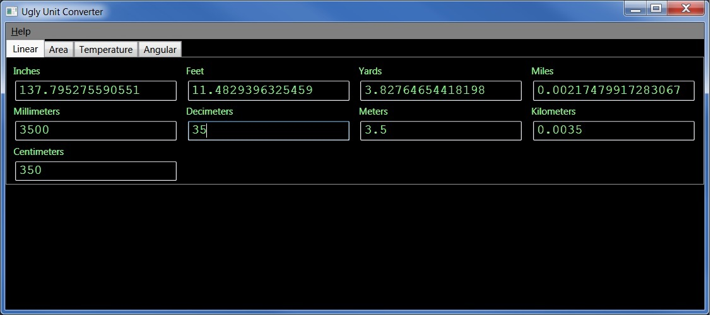

Welcome to UglyUnitConverter.
This project was initially started to give me a handy unit conversion program that functioned the way I wanted. I also decided to use it as another avenue for learning/practicing programming. To make it a little more robust than it started, I decided to make a class for each type of unit (linear, area, etc.) and instantiate a value object that could return the value in any of the other units currently in the class. These classes are stored in a separate DLL so that they can be easily used in other projects.
